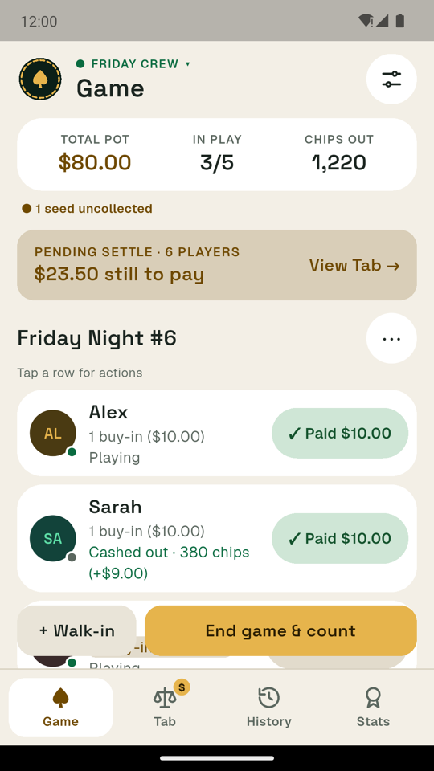
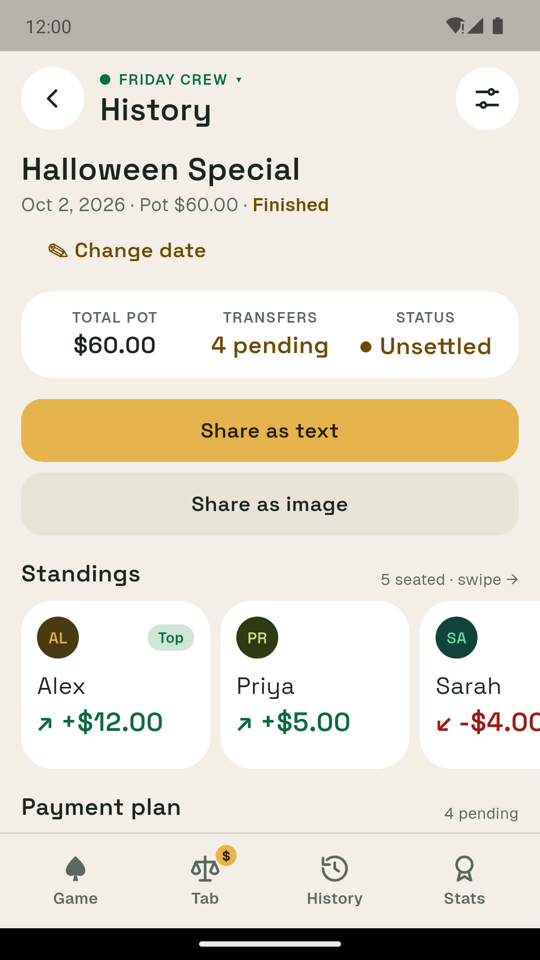
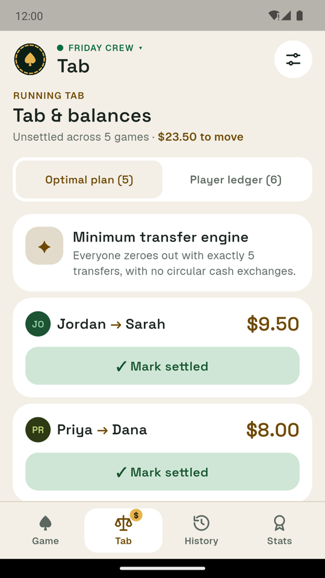
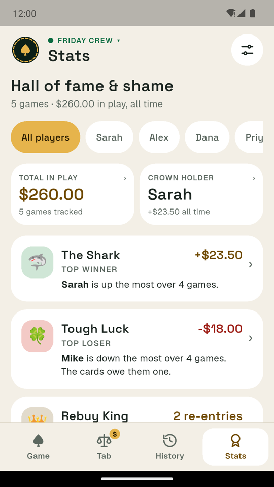

Poker Ledger
The scorekeeper for home poker games · track buy-ins, cash-outs and who owes whom.




Poker Ledger is a bookkeeping tool only. It doesn’t deal cards, run games, take bets or move money.
What it does
- Seat your players, then add re-entries, walk-ins and seed money as the night goes on
- Cash players out with a big number pad; chips turn into dollars as you type
- Count the final chips and check them against what was issued
- See the fewest payments that settle everyone up, with leftover cents shared fairly
- Share the results to the group chat as text or as a clean picture
- Keep a running tab across games, and mark payments as paid in full or in part
- History and stats: winners, streaks, biggest nights and head-to-head records
- Several groups, each with its own players, stakes, tab and stats
- Backups on your phone, export to a spreadsheet, light and dark mode
Private by design
Poker Ledger works entirely offline. There are no accounts, no ads, and no data collection of any kind. Everything you enter stays on your device. Read the privacy policy.
Support
Questions, feedback or a bug to report? See the support page or email support@gosprollc.com.